1 最初5分钟 — 从安装到运行第一个宏
d4cute helper 是在玩暗黑破坏神4时，舒适而安全地辅助重复技能释放、增益维持以及复杂的背包赫拉迪克宝箱预变性作业的高性能助手。
- 下载最新安装包 — 下载安装包 (
d4cute_helper_setup.exe) 进行安装，或直接运行免安装可执行文件 (d4cute_helper.exe)。如果 Windows 弹出“未知发布者”警告，请点击 更多信息 → 仍要运行。 - 启动 helper 后，窗口大小会自动以最小的默认尺寸开始，不会遮挡游戏画面。
- 在配置文件栏中选择适合自己职业的配置文件，或者用 ＋ 按钮新建一个。
- 槽位 A，然后在 宏设置中点击蓝色的触发键按钮，指定要使用的鼠标或键盘按键。
- 序列 标签页中添加要释放的技能键和延迟，或者点击 录制 按钮，将实际游戏中的按键输入原样记录下来。
- 点击底部的 ▶ 开始 按钮，回到游戏中按下触发键，宏就会安全运行。
2 最新界面布局 (v1.30)
1.30 版本中，顶部栏和槽位标签栏升级得更加直观、美观。
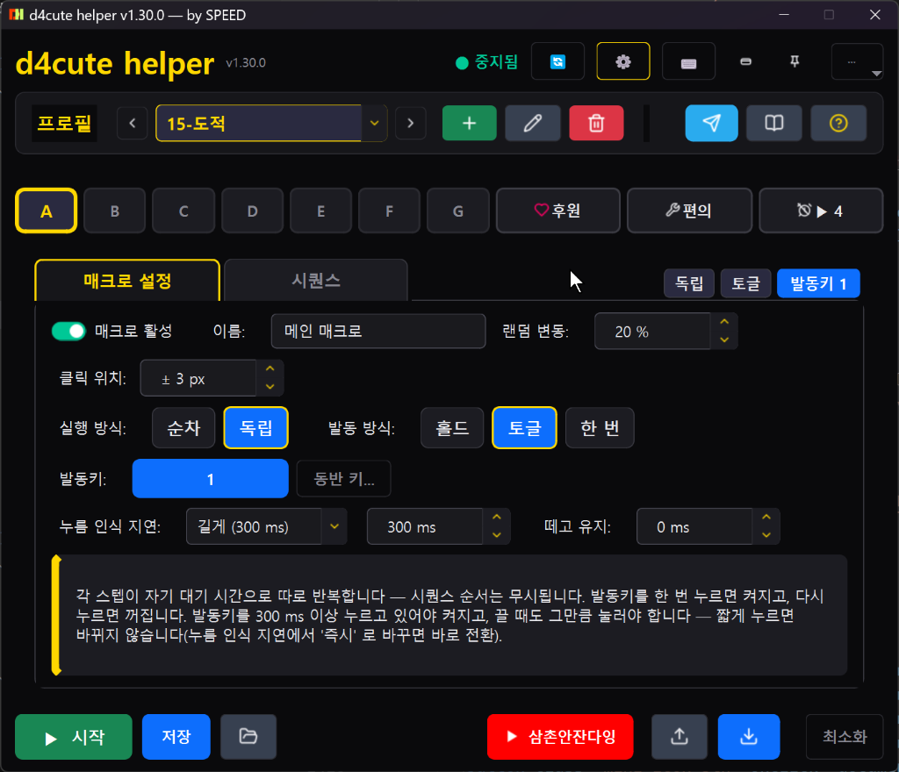
🔍 点击放大1) 顶部栏 & 配置文件控制
- 运行状态指示器 — ● 已停止 / ● 运行中 / ● 已暂停 以实时颜色圆点显示状态。
- 顶部功能按钮 — 更新(检测到新补丁时闪烁)、 设置(⚙), 测试(⌨)(输入发送验证)、迷你窗口切换、置顶(图钉)、 ···(更多工具菜单)。
- 配置文件栏 (Profile Bar) — ‹ › 按钮可以快速切换配置文件， 双击下拉框即可立即更改名称。 ＋(新建配置文件)、 ✎(重命名)、 🗑(删除)、 Telegram 图标, 文档(赛季文档)、 ?(帮助) 按钮。窗口每次启动时都以最小的默认尺寸打开(下限 900×700，会随字体缩放变大)，没有全屏窗口(最大化)。
2) 槽位栏 (Slot Navigation) — 大幅扩展为7个槽位(A~G)
- A B C D E F G — 通过最新补丁，宏槽位从原来的4个(A~D)大幅扩展为共7个(A~G)！复杂的输出循环、位移技能、护盾/增益维持、特定情况专用技能，都可以不愁槽位不足地分开登记。已开启的槽位边框会高亮，运行时会以红底白字亮起。
- 直接指定宏名称 — 在每个槽位的宏设置界面中， 名称：[ 主宏 ] 可以通过输入框为每个槽位输入直观的专属名称。鼠标悬停在槽位按钮上时弹出的提示框最上方，也会大字显示这个名称。
- ♡ 赞助 — 以横幅轮播形式展示“helper 免费”声明、合作伙伴推荐链接(星链等)以及族长的频道介绍。helper 不会自动发送任何东西。
- 🔧 便利 — 专用于赫拉迪克宝箱背包预变性自动化的单页 UI。
- ⏱ ▶ 4 (闹钟) — 设置军团、世界首领、地狱狂潮及个人计时器闹钟。右侧会以徽标显示当前正在运行的闹钟数量。
- 槽位右侧摘要标签 — 当前所选槽位的执行方式(顺序/独立)、触发方式(保持/切换/一次)、触发键会始终实时汇总显示。
3) 底部综合控制栏
- ▶ 开始 / ■ 停止：开始或停止 helper 的所有宏检测与执行 (默认快捷键 F9).
- 保存：将当前修改的配置文件及宏设置立即永久保存到磁盘。
- 📁 加载：误改了设置时，将配置文件恢复到最后保存的状态。
- ▶ 삼촌안잔다잉：一键前往族长的游戏直播频道。
- 📤 导出：将当前配置文件设置保存为
.d4cute备份文件。 - 📥 导入：加载其他用户或氏族成员分享的
.d4cute配置文件并立即应用。 - 最小化：将 helper 窗口最小化到任务栏。
3 宏设置 — 执行方式 · 触发方式 · 触发键
1) 执行方式及触发方式
| 类别 | 模式名 | 说明及推荐用途 |
|---|---|---|
| 执行方式 | 顺序 | 从步骤1到最后一个步骤依次释放，然后从头重复。适合固定的技能连招及输出循环轮转。 |
| 独立 | 每个步骤按各自设置的冷却(等待时间)独立重复执行。最适合维持冷却各不相同的护盾/增益技能。 | |
| 触发方式 | 保持 | 仅在 按住触发键期间 宏才会运行，松开按键后立即停止。推荐用于主力输出技能。 |
| 切换 | 按一次触发键开启，再按一次关闭。长时间刷怪或巡回副本时可以减轻手指疲劳。 | |
| 一次 | 按下触发键后，会从头到尾执行1次序列，然后自行结束。适合连续制作药水、购买装备等。 |
2) 触发键选择及精细调节
- 灵活的触发键：支持键盘所有按键、鼠标左/右键、滚轮上/下、侧键，以及 Ctrl · Shift · Alt 组合键。可以给多个槽位指定相同的触发键，实现同时联动触发。但不能与便利功能(预变性)的开始快捷键重复 — 重复时在选择时会被拒绝。
- 按压识别延迟 (Press Delay)：忽略短暂轻点的点击，只有按住超过指定时间(例如 250~300ms)时宏才会开启。 将右键用作触发键时，防止物品栏或仓库窗口被关闭的必备设置。
- 松开保持 (Release Buffer)：松开触发键之后，宏的运行还会在指定时间内继续维持。让你在战斗结束后拾取周围地面物品时，攻击不会中断。
- 伴随键 (Companion Keys)：可以指定宏运行期间持续一同按住的按键(例如原地强制攻击 Shift、强制移动键等)。
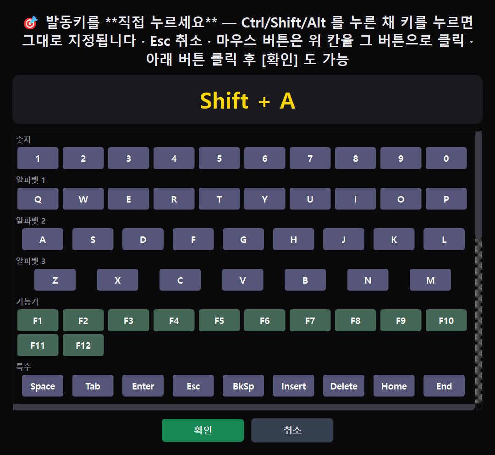
4 序列构建器 · 批量更改延迟 · 鼠标录制
1) 步骤卡片及批量操作
- 点击步骤卡片，可以单独更改按键、动作模式、延迟(等待时间，ms)。
- 模式选项:
- Single：单次输入按键1次
- Burst：按指定间隔高速连击
- Hold：在指定时间内按住按键不放
- 批量更改延迟：将所有步骤的等待时间一次性更改为想要的数值(ms)或比例(%)。
- 全部 → Burst/Single：一键批量切换所有已登记步骤的动作模式。
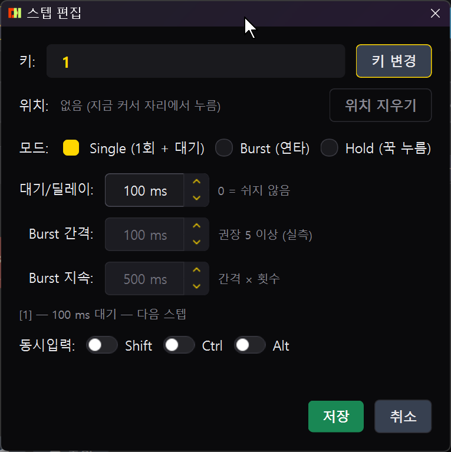
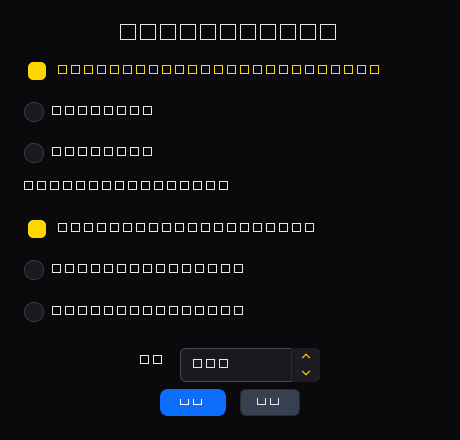
2) 实时鼠标坐标录制及拟人化随机误差
- 录制 按下按钮后在游戏画面中输入按键和鼠标，顺序和时间间隔都会原样记录。
- 屏幕坐标记录：点击鼠标时，会记录当时点击位置的屏幕绝对坐标(X, Y)，宏回放时会自动点击该位置。
- 拟人化随机误差:
- 点击位置 ± px：每次点击都在指定像素半径内随机产生误差，防止被机械检测。
- 随机波动 %：在每个步骤间隔里混入一定比例的随机延迟，模仿自然的手部动作。
3) 拖动轨迹录制 — 连按住移动的路径也能记录 (1.32.0)
- 录制过程中，将鼠标按钮 按住不放并移动时 该路径会一并记录。从上一个记录点开始，移动距离超过 8px ，或者每经过 16ms 就记录一次坐标，因此快速旋转记录得密集，缓慢移动也不会中断。
- 回放时在按下的位置按下按钮后， 按记录的时间沿相同路径 移动光标，并在松开的位置松开。旧版本只记住按下位置和松开位置两个点，所以光标会瞬间移动。
- 旋风斩 · 精神集中 之类的引导技能：在游戏中将技能 鼠标右键上，录制时按住右键转圈，这个旋转就会原样被录制·回放。按住左键移动也是一样。
- 随机波动 %在整个轨迹时间内只应用一次， 点击位置 ± px在整个轨迹中也只应用一次，所以光标不会抖动。
- 在步骤编辑器中用数值修改位置，或者 清除拖动，轨迹就会被丢弃，像以前一样跳跃回放。
- 一次拖动最多保存 600 个点(以 16ms 间隔计约 10 秒)。轨迹是屏幕绝对坐标，如果更改了分辨率·窗口位置，请重新录制。
4) 成品 360度圆形旋转包 (9种预设) & 下载
亲手录制拖动时，圆容易变形、旋转角度难以刚好吻合，起点和终点也容易出现停顿。
为此我们提供了经过数学精确计算的 完美360度闭合圆形旋转序列包 (9种预设)。
官方 Telegram 公告频道(@d4_notice) 以及 用户群组(@d4cute_helper)中 实际游戏内360度旋转演示视频和成品
sequences.d4seq 旋转包文件，可以直接免费获取！
🔧 旋转包使用方法及设置小窍门
- 导入 (Import)：准备好从 Telegram 下载的
sequences.d4seq文件，点击 helper 窗口底部的 导入 按钮并选择文件，9种序列就会一次性登记。 - 分配槽位：按下想要的宏槽位(A~G)，然后在 序列库中从上述9种里选择喜欢的预设。
- 想只转一圈就停下？：将宏触发方式设置为 [一次 (Once)]。每按一次键 都会准确地只转1圈，然后在原地自动干净利落地停下。
- 想按住期间持续旋转？：将触发方式设置为 [按住期间 (Hold)] 或 [切换 (Toggle)]。步骤间延迟(
interval_ms)已优化为0ms， 起点和终点不会卡顿或停顿，如行云流水般连续旋转。
5 便利功能 — 背包预变性 (单页 UI)
在 1.30 版本中全新改版的 背包预变性工具只需寥寥几步操作，就能把利用赫拉迪克宝箱对传奇·独特装备进行预变性的作业自动化。
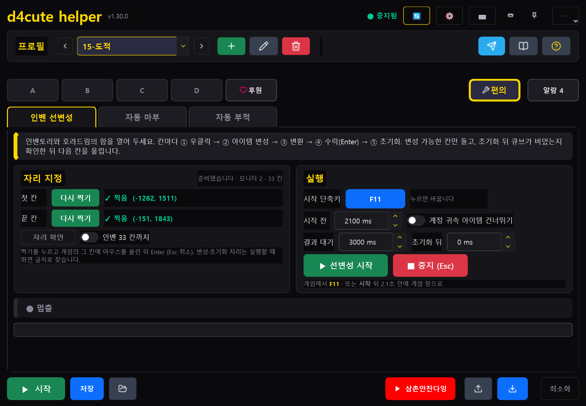
🔍 点击放大1) 33格自动网格计算及开始
- 在游戏中打开 物品栏和 赫拉迪克宝箱 窗口。
- 标记首格，然后将鼠标放在游戏物品栏的第一格(左上角)上，按下 Enter键。
- 标记末格，然后将鼠标放在物品栏最后一格(右下角)上，按下 Enter键。(随时可按 Esc)
- 取消)只需指定两个点的位置，33个物品栏格子的中心坐标就会被自动精确计算出来。
- 在游戏画面中按下开始快捷键(默认 F10，可点击蓝色按键按钮更改)，预变性就会全自动开始。即使不特意打开便利功能标签页，快捷键也始终有效。
2) 运行机制及智能安全装置
- 智能循环：遍历物品栏每个格子， 右键单击 → 放入赫拉迪克宝箱 → 点击物品变性按钮 → 变换 → 接受(Enter) → 重置，自动依次进行。
- 跳过账号绑定物品开关：开启开关时跳过绑定物品，只挑选非绑定装备进行变性。关闭开关时绑定装备也会变性，仅在弹出接受弹窗时才安全地发送 Enter。
- 魔方清空验证 (Cube Empty Check)：重置之后，通过魔方第一格的 图像(放入第一个物品时会记住空的样子和满的样子)判断是否已清空，在无法获取图像的环境下，则用魔方标题文字辅助判定。如果没有清空就再次点击重置，最终仍未清空则停止 — 这是为了防止两个物品叠放在一起而设的装置。
- 紧急停止：作业途中按下键盘的 Esc 键，无论在哪里预变性都会立即停止。
- 慢速电脑调节值: 开始前 ms(点击开始按钮后留出切换到游戏窗口的时间)、 结果等待 ms(默认 3000 — 变换·接受之后，等到变性结束、变换按钮熄灭的上限，一收到信号就立即继续)、 重置后 ms(默认 0 — 重置后额外等待)。在动画较慢的电脑上，如果物品重叠或未变性就跳过，请调高结果等待。
- 运行记录：每转完一轮，
%APPDATA%\d4cute_helper\debug\alter_slots.txt中都会留下每格的判定。出现问题时，请把这个文件上传到 Telegram 群组。
6 智能闹钟系统 — 事件 · 个人 · 屏幕通知 · 语音(TTS)
这是一个高性能后台闹钟引擎，提醒你不错过暗黑破坏神4的主要定时内容(军团入侵、野外首领、地狱狂潮等)以及你自己的个人计时器。
1) 事件通知 (野外首领 · 地狱狂潮 · 军团)
与游戏外部网站(diablo4.life)实时联动，自动计算最新的首领和地狱狂潮出现时间。
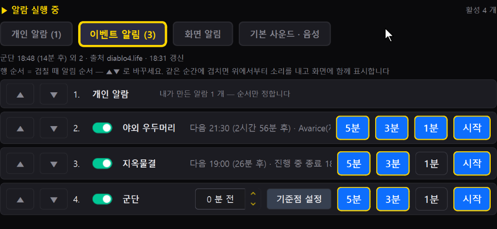
🔍 点击放大- 选择通知时点：每个事件都可以单独开关 5分钟, 3分钟, 1分钟 前 以及 开始 时刻。
- 重叠时优先级顺序: ▲ ▼ 按钮可以更改事件之间的顺序。如果同一时刻多个通知重叠，位于上方的事件先发出声音，并一同显示在屏幕上。
- 设置军团参考点：也可以根据自己的画面情况，手动将军团出现时间校正为0分钟前参考点。
2) 个人闹钟 (自定义计时器 & 重复周期)
可以无限制地登记属于自己的自定义计时器，如药剂30分钟到期闹钟、副本冷却、休息提醒等。
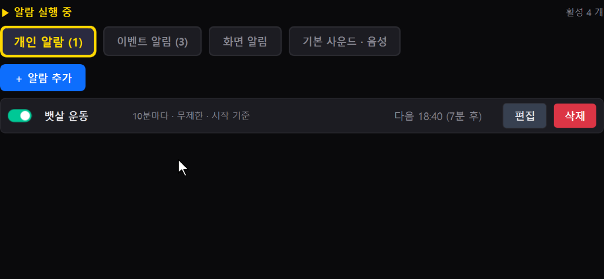
🔍 点击放大- ＋ 添加闹钟：设定想要的名称和周期(以分钟为单位或指定时刻)、开始基准后登记。
- 开关 On/Off：只需要的计时器可以通过开关立即打开和关闭，距离下次通知的剩余时间会实时显示。
3) 屏幕通知 (游戏内文字叠加横幅)
在屏幕上显示文字，让你在游戏过程中不妨碍视野的同时，直观地确认重要通知。
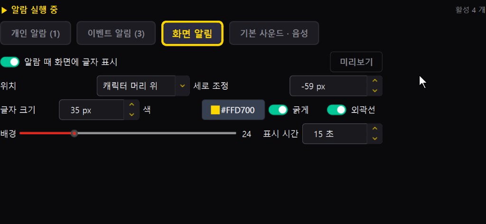
🔍 点击放大- 通知位置 & 垂直偏移: 角色头顶 等位置任选，并可微调垂直像素偏移(例：-59 px)。
- 可读性选项：字体大小(px)、调色板(金色 #FFD700 等)、 加粗 以及 描边 开关打开后，即使在昏暗的地下城或华丽的技能特效中，文字也清晰可见。
- 预览 按钮，可以立即测试它在游戏中的显示效果。
4) 基本声音 · 语音 (TTS & 音效)
通过提示音效和 Supertonic 3 人工智能语音引擎，提供自然的韩语语音提示。
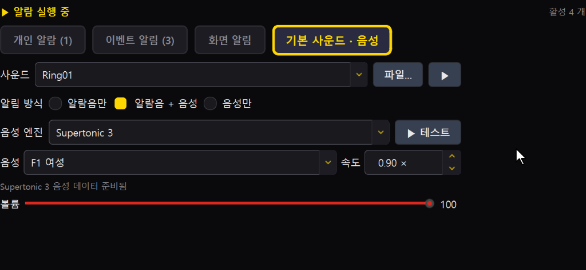
🔍 点击放大- 通知方式: 仅提示音, 提示音 ＋ 语音, 仅语音 支持3种模式。
- 语音引擎：内置 Supertonic 3 语音引擎 — 以“F1 女声”等清晰的韩语发音朗读，语速(0.90x 等)和音量(0~100)均可自由调节。
- ▶ 测试 按钮可以立即确认实际语音输出质量。
7 窗口模式 · 置顶(图钉) · 游戏内叠加层
1) 迷你窗口模式 (Mini Bar)
这是一种可以小小地放在游戏屏幕显示器一角使用的超小型单行栏形态的模式。
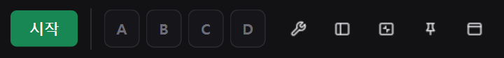
- 槽位 A~G 7个当前运行状态会亮灯，可实时查看。
- 开始 / 停止 按钮、便利功能(扳手)按钮 — 点击后回到基本窗口并打开便利功能标签页(预变性开始请用快捷键或该标签页的开始按钮)，内置置顶(图钉)按钮。
- 点击返回(方框)按钮，会立即回到原始大小的基本窗口。
2) 游戏内 HUD 叠加层
半透明地浮现在游戏画面上，实时查看宏运行情况的必备 HUD 工具。运行中的宏槽位、保持键、当前正在敲击的按键列表会透明显示。
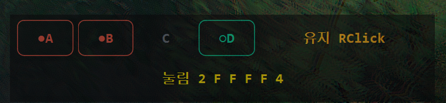
🔍 点击放大- 运行宏槽位状态: •A •B 这样，当前触发并正在运行的槽位会以红色边框和圆点(•)亮起，非活动槽位(C)和切换待机槽位(○D)一目了然。
- 保持键 (Hold / Companion) 输出：当前持续按住的按键(例：
保持 RClick,保持 Shift等)会实时显示在右上方。 - 实时按下键列表 (Key Log)：底部会连续输出当前序列中正在实时敲击的技能键(例：
按下 2 F F F F 4)，可以在游戏中直接确认技能循环是否准确咬合运转。 - 预变性进度：运行赫拉迪克宝箱预变性时，叠加层上会显示当前格子编号和进度。
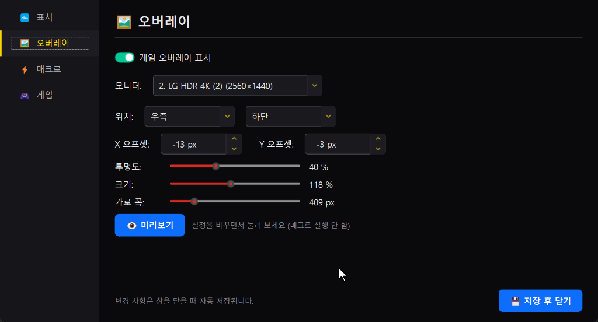
🔍 点击放大- 游戏叠加层显示：开启和关闭叠加层的总开关。
- 选择显示器：在双屏及多显示器环境中，可以通过下拉菜单直接指定运行暗黑破坏神4的显示器(例：
2: LG HDR 4K (2560×1440))。 - 屏幕位置 & 精确像素偏移：选择屏幕9个区域之一(例：
右侧底部)后， X 偏移(-13 px)和 Y 偏移(-3 px)以像素为单位微调位置，避免遮挡小地图或游戏 UI。 - 透明度 & 大小 & 横向宽度：通过滑块将 透明度(默认 40% 半透明)、 大小(118% 等倍率)、 横向宽度(409 px)优化到适合自己的视野。
- 👁 预览：即使不亲自运行宏，按下按钮后叠加层也会以设置的位置和大小立即出现在屏幕上，方便确认。
8 安全装置 — 待机键(Stop Keys) · 游戏窗口检测
- 待机键 (Stop Keys，默认值： Enter Tab T I)：打开聊天窗口(Enter)、打开地图(Tab)、传送门(T)、打开物品栏(I)等打开游戏界面时，为了避免宏乱放技能，会 立即暂停输入。聊完后再次按下触发键，宏就会恢复。
- 游戏窗口检测：仅当暗黑破坏神4进程为活动窗口时才会运行。也可以在设置中由用户自行自定义匹配特定窗口标题或进程名。
- 输入发送验证工具：点击顶部栏的 测试 按钮，可以在游戏之外预先检查虚拟按键输入是否能正常注入系统。
3) 输入测试窗口
点击顶部栏的 测试 按钮会弹出一个小窗口，可以用眼睛确认宏发送的按键·鼠标输入是否原样进入。当按下触发键却毫无反应时，它是区分“helper 发不出输入，还是游戏没有接收”的第一个检查工具。
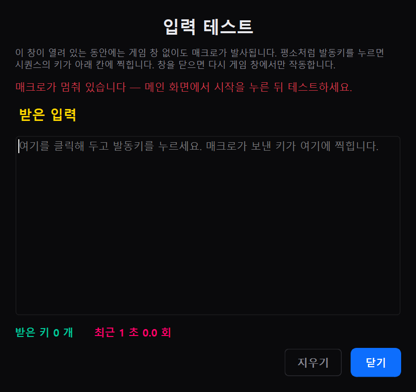
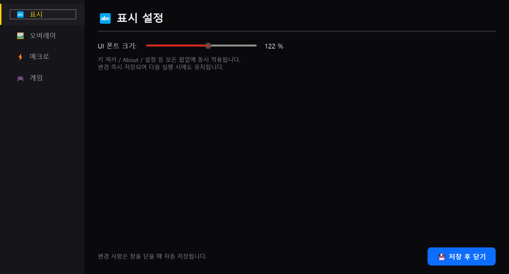
🔍 点击放大9 配置文件管理 · 备份 · 氏族成员分享
- 一个配置文件会把槽位 A~G(共7个)的所有序列、延迟、触发键设置整体打包保存。
- 如果按元素术士、野蛮人、德鲁伊、死灵法师、盗贼、灵能师等职业及构建分别建立配置文件，点一下就能替换全部设置。
- 导出：将当前设置以
.d4cute文件导出，可以安全备份或分享给氏族成员。 - 导入：加载其他用户分享的
.d4cute配置文件并立即应用到自己的 helper。 - 保存 按钮才会安全地写入磁盘，误改时可以点击 加载恢复到最后保存的时间点。
10 Telegram 支持 & 调试日志查看器
点击 helper 顶部配置文件栏的蓝色 Telegram 图标 图标会打开 Telegram 联动对话框。\n 可以快速确认新版本消息， @d4cute_helper 在用户群组中提问及反馈 bug，发生错误时 一键提取调试日志获得问题解决支持。
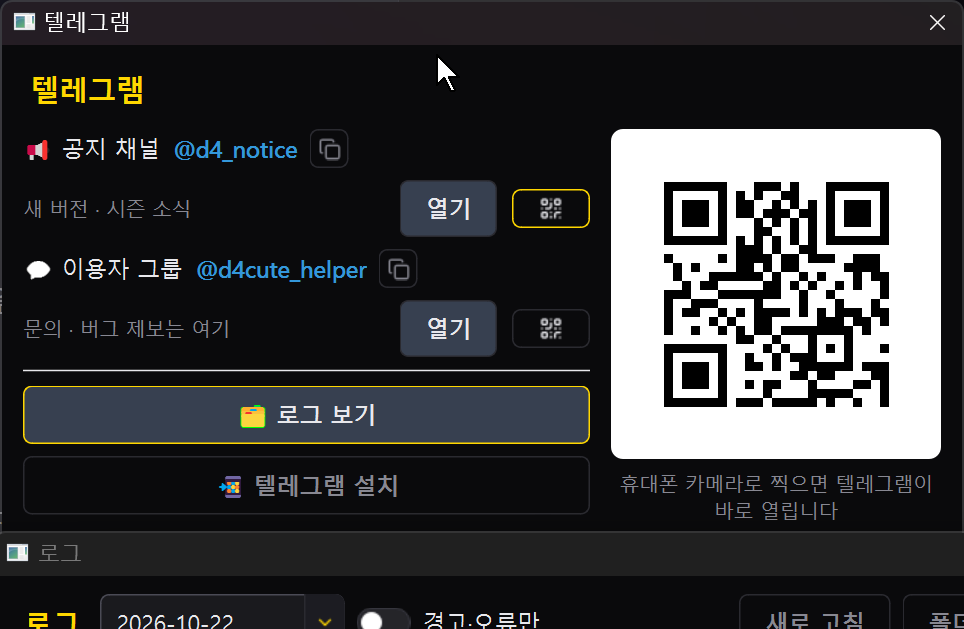
🔍 点击放大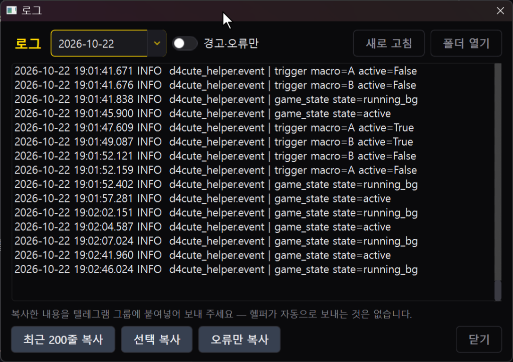
🔍 点击放大1) 安装 Telegram 及事前准备
Telegram 是在电脑和智能手机上轻便安全运行的全球即时通讯软件。如果电脑或手机上还没有安装 Telegram，可以用下面的方法轻松准备。
点击 helper Telegram 窗口底部的 安装 Telegram 按钮，浏览器会打开 Telegram 官方网站 (telegram.org)。 helper 不会擅自下载或安装可执行文件，请放心使用。
- 智能手机 (移动端): Google Play 商店 或 Apple App Store中
Telegram搜索并免费下载。只需手机号验证，1分钟内即可完成注册。 - 电脑 (桌面端): Telegram Desktop ↗ 从官方页面下载 Windows 版安装程序并安装后，通过手机 Telegram 应用的 设置 → 设备 → 链接桌面设备扫描二维码，无需密码即可立即登录。
2) 加入频道 & 用户群组的方法
d4cute helper 根据用途运营两个官方 Telegram 群。
삼촌안잔다잉 YouTube 频道是享受暗黑破坏神4游戏玩法和交流的个人直播空间。 YouTube 直播聊天或评论一律不受理 helper 咨询，请务必前往 Telegram 官方群组 (@d4cute_helper)。
📱 群组简便加入方法 2 种
- 方法 A (智能手机相机扫描二维码 — 最推荐！)：打开智能手机的默认相机应用，对准屏幕右侧的 大二维码，顶部会出现黄色的 Telegram 链接横幅。轻触一下即可 @d4cute_helper 立即进入群组。
- 方法 B (直接打开电脑版 Telegram)：在窗口中点击 打开 按钮，或者点击网页链接 (https://t.me/d4cute_helper)，就会直接进入电脑版 Telegram 客户端。
3) 通过查看日志复制错误 & 解决问题的方法
当宏突然停止、预变性过程中发生错误、或出现意外动作时，想向作者说明情况， 日志数据是最可靠的钥匙。
🔍 日志查看器界面构成 & 按钮功能
- 日志日期下拉框：选择发生错误的日期(默认：今天的日期)。日志 自动保存最近7天，之后从最旧的文件开始依次删除。
- 仅警告·错误 切换开关：隐藏数千行普通的
INFO日志，只挑出系统警告 (WARN) 及错误 (ERROR) 条目查看。 - 刷新：在 helper 开启的状态下，立即重新加载实时累积的最新日志到画面上。
- 打开文件夹：直接打开保存日志原始文本文件的 Windows 资源管理器文件夹 (
%APPDATA%\d4cute_helper\logs)。 - 复制最近 200 行：为了能够了解错误之前按过哪些键、发生过哪些事件的上下文，把最近 200 行日志复制到剪贴板。
- 仅复制错误：从全部日志中精确提取错误 (ERROR) 及异常堆栈跟踪语句并放入剪贴板。
- 复制所选：在文本窗口中用鼠标拖选想要的部分后，只复制该区间。
- 用户名自动遮蔽：日志里的文件路径 (例：
C:\Users\张三\...) 中的用户账户名会被自动隐藏到无法识别后再复制，不必担心隐私泄露。 - 阻止外部自动发送：正如底部提示语 ("请把复制的内容粘贴发送到 Telegram 群组 — helper 不会自动发送任何东西。") 所示，helper 不会通过互联网偷偷把用户的日志发送到外部。只有用户亲自复制粘贴时才会安全地分享。
🚀 错误日志传递及快速解决 3 步指南
-
第 1 步：复制日志
问题发生后，立即在 Telegram 对话框中 📁 查看日志 点击按钮，并在窗口底部点击 仅复制错误 或 复制最近 200 行 按钮。
※ 复制的日志第一行会自动附带 helper 版本、操作系统环境、分辨率缩放等元信息，开发者可以一眼掌握环境。 -
第 2 步：粘贴到 Telegram 群组
在智能手机或电脑上进入 @d4cute_helper 群组后，点击消息输入框并执行 Ctrl + V(手机上长按输入框后选择粘贴)。 -
第 3 步：附上发生情况说明
请和日志一起留下 “在什么情况下发生了问题” 1~2 行说明：
示例 1：“开始背包预变性后，在第12格魔方清空验证阶段停住了。附上日志。”如果能一并附上截图或手机照片，就能更快更准确地诊断并打补丁。
示例 2：“在全局设置里更改了叠加层位置，但屏幕上没有出现叠加层。”
11 앙증맞은 氏族 & 삼촌안잔다잉 频道
这是作者活动的氏族，以及该族长的游戏直播频道。两者都与 helper 无关，是独立的地方。
<앙증맞은> 彩虹之翼
暗黑破坏神4游戏内氏族 · 族长 韩国(삼촌안잔다잉)
这是作者一起活动的游戏内交友氏族。座右铭是 “帮助是互惠互利” — 比起单方面的带躺，更注重互相照顾的给予与回报，养成搜索的习惯。
- 每个赛季一起进行深渊高阶攀登、火炬无限跑、首领组队
- 一起刷神话独特装备并完成赛季旅程
- 不运营 Discord，游戏内申请后在 YouTube 频道确认
삼촌안잔다잉
🌙 大家睡觉时，叔叔还在玩游戏！ · YouTube·CHZZK 同时直播
这是族长运营的 游戏直播频道(不是作者的频道)。以暗黑破坏神4为中心，分享亲自游玩的生动体验和攻略。
- 各赛季角色培养·构建·技能·征服者指南 & 装备配置技巧
- 公开测试服(PTR)体验、补丁变更点及可以暂停观看的 Shorts「掌中攻略集」
<앙증맞은> 彩虹之翼 氏族加入及基本生活指南
我们营造互相体谅、愉快相处的暗黑破坏神4氏族文化。
🎥 加入流程 4 步 无需加入 Discord！
- 在游戏内搜索氏族 → 앙증맞은 查找 → 申请加入
- 삼촌안잔다잉 频道(直播等)告知已申请加入
- 族长及管理员确认申请记录后 批准。
- 申请人在游戏内再次 最终批准(接受)，加入即完成
🤝 加入后的活动 & 氏族基本生活守则
- 热情的第一声问候 & 增进亲近感：加入批准后，请在游戏内公会聊天窗口留下第一声问候。互相称呼昵称打招呼，很快就会熟络起来。
- 求助 & 互惠文化：培养、深渊高阶、首领召唤组队等需要帮助时，请随时在 公会聊天窗口或 YouTube 直播中请求。 “帮助是互惠互利(给予与回报)” 的心态，以后也请一起帮助其他家人。
- 基本礼仪与相互尊重：这里是各种玩家共处的交友空间，请使用体谅他人的语言(禁止贬低·谩骂)。也建议提问前养成简单搜索的习惯。
- 赛季结束及新赛季回归：赛季结束后超过10天未登录可能会被清理成员，但新赛季开始后随时都可以轻松重新申请加入。
12 常见问题 (FAQ) & 问题解决
Q. 按下触发键，技能也不释放。
- 请确认顶部栏的状态是否为 运行中( 是否点击了▶ 开始 按钮)。
- 请确认所选槽位的 宏激活开关是否已打开，序列标签页中是否至少有1个步骤。
- 暗黑破坏神4游戏窗口必须处于屏幕最前方的焦点状态。
- 如果因为打开聊天或物品栏而被 待机键暂停，再按一次触发键即可解除。
Q. 用鼠标右键做触发键，在物品栏或仓库里窗口总是被关闭。
请将宏设置中的 按压识别延迟(Press Delay)设置为 250ms ~ 300ms。这样右键点击物品移动时的“短点击”会原样传给游戏，只有长按时宏才会开启，窗口被关闭的误操作就会彻底消失。
Q. 赫拉迪克宝箱预变性找不到按钮或停住了。
1.30 版本大幅强化了 OCR 文字识别逻辑和魔方清空验证。如果游戏内图形设置导致文字过于模糊，或者 UI 缩放极端，可能难以识别，问题持续的话，请 %APPDATA%\d4cute_helper\debug\ 文件夹中的 alter_slots.txt 文件复制后到 Telegram 群组咨询。
Q. 预变性时两个物品重叠，或者没变性就跳到下一格。
这是变性动画较慢的电脑上出现的症状。请调高便利功能标签页的 结果等待 ms(例：3000 → 5000)，如果仍然反复出现，请把 debug\alter_slots.txt 上传到群组。从 1.30.1 开始会通过魔方第一格的图像确认是否已清空，即使接受窗口弹出得晚也会按 Enter。
Q. helper·宏的问题去哪里提问？
Telegram 用户群组 @d4cute_helper 中受理。삼촌안잔다잉 YouTube 频道是享受游戏的直播，不受理 helper·宏咨询。
Q. 窗口变白或闪烁 (白屏现象)。
1.30 中更换了内置浏览器的渲染器，修复了白屏。如果仍然出现，请把日志查看器的 仅复制错误 结果和屏幕截图上传到 Telegram 群组。